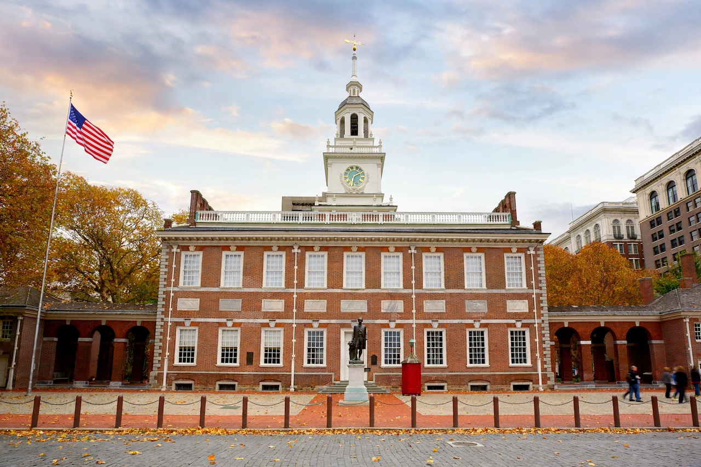

Constitutional Convention (United States)

The Constitutional Convention (also known as the Philadelphia Convention, the Federal Convention, or the Grand Convention at Philadelphia) took place from 25 May to 17 September 1787, in the Pennsylvania State House (now Independence Hall). Delegates from twelve of the thirteen states — Rhode Island sent none — drafted the Constitution of the United States, replacing the Articles of Confederation.
Background
Weaknesses of the Articles — Congress's inability to tax, regulate interstate commerce, or enforce its decisions — together with events such as Shays' Rebellion, convinced many leaders that the confederation needed fundamental reform. Congress authorised a convention "for the sole and express purpose of revising the Articles", but the delegates, meeting in secret under the presidency of George Washington, instead wrote a new frame of government.
Debates and compromises
The Virginia Plan proposed a strong national government with a bicameral legislature apportioned by population; the New Jersey Plan favoured equal state representation. The Connecticut Compromise resolved the deadlock: a House of Representatives based on population and a Senate with equal representation per state (compare the Roman Senate tradition of an upper chamber). The Three-Fifths Compromise counted three-fifths of the enslaved population for representation and taxation. Delegates also created a single executive, an independent judiciary, and a system of federalism and separated powers, while leaving slavery largely unaddressed beyond the compromise clauses and a twenty-year protection of the Atlantic slave trade.
James Madison, whose notes provide the principal record of the debates, is often called the "Father of the Constitution". Of the 55 delegates who attended, 39 signed the final document on 17 September 1787.
Ratification
The Constitution provided for ratification by conventions in nine states. The ensuing debate between Federalists and Anti-Federalists produced the Federalist Papers and demands for a bill of rights; the ninth state, New Hampshire, ratified in June 1788, and the new government began in 1789. The first ten amendments — the Bill of Rights — followed in 1791.
Other meanings
"Constitutional convention" may also refer to a convention called under Article V to propose amendments to the US Constitution (never used), and to state constitutional conventions, of which many have been held since the 18th century.